The programme will be published on due time.
Benevol 2026 will happen in the Quintana building of the Universidad Rey Juan Carlos (URJC) in Madrid, Spain.
The Quintana Building of URJC is located in the center of Madrid. There are plenty of hotels and other accommodations nearby. In addition, it is at walking distance from two metro (subway) stations, Arguelles and Ventura Rodriguez, served by three metro lines (Line 3, Line 4, and Line 6).
Choose wisely! And do get in touch with general/local chairs if you need any assistance.
The 25th anniversary edition of the Belgium-Netherlands Software Evolution Workshop (BENEVOL) will be held 26-27 November 2026 in the center of Madrid in the vicinity of the Universidad Rey Juan Carlos. The goal of BENEVOL is to bring together researchers who are working in the field of software evolution and maintenance. BENEVOL offers an informal forum to meet and discuss new ideas, relevant problems, and fresh research results. It provides a welcoming space for early-stage researchers to receive feedback on their work and connect with experts in the field.
BENEVOL accepts submissions on topics related to software evolution and maintenance under the following categories:
Accepted full papers will be invited for inclusion in the workshop postproceedings; accepted short papers will be invited solely on a case-by-case basis. Presentation abstracts will only be reviewed for relevance and will be made available on the workshop's website. The PC reserves the right to accept full or short paper submissions for presentation only, when the paper does not meet acceptance standards but the idea demonstrates clear value.
BENEVOL follows a single-blind reviewing model. The quality of all submissions will be evaluated on the following criteria, where applicable. Authors are thus encouraged to carefully consider them to shape their contributions before submission:
At least three program committee members will review each submission. They will assess the adherence to the workshop's scope (software evolution and maintenance) and the aforementioned quality criteria.
All submissions must conform to the new CEUR-ART style. One can use the LATEX template directly on Overleaf or download an offline version with the style files (including DOCX template files). All submissions should use the single-column template.
We allow using AI tools for writing assistance (grammar checkers, rephrasing). Of course, we explicitly forbid LLM-generated papers as it may lead to plagiarism and may be regarded as unethical. Therefore, such tools cannot be credited as authors. Please check the CEUR-WS Policy on AI assisting tools for more information.
Papers should be submitted via EasyChair. Please mark the category it belongs to. You can upload incremental versions of your paper, so do not wait until the last minute to submit it.
We give the opportunity to authors to adjust their paper before the workshop according to the reviews, to be shared thorugh this website. After the workshop, there will be another opportunity to update the papers — based on reviews as well as on the feedback received during your presentation and in discussions which followed. Post-proceedings will be submitted to CEUR-WS.org in early 2027.
All dates are in the Anywhere on Earth (AoE, 23:59) calendar designation.